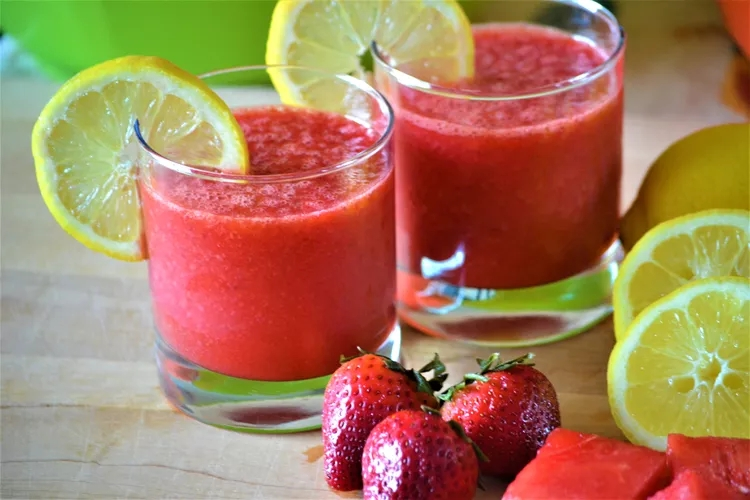

Go back
Watermelon and Strawberry Lemonade

Description
This watermelon and strawberry lemonade recipe simply blends fresh fruit
into a drink! It's best served cold over ice.
Ingredients
- 8 cups cubed seeded watermelon
- 1 cup fresh strawberries, halved
- ½ cup fresh lemon juice
- 1 cup white sugar
- 2 cups water
Steps
-
Combine watermelon, strawberries, lemon juice, sugar, and water in a
blender.
- Blend until smooth.